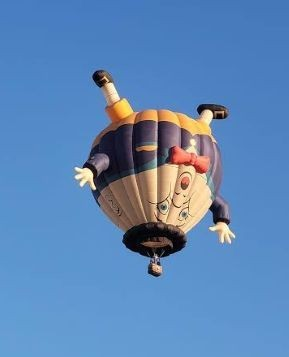

Fly Like a Bird in the Sky
A Once in a Lifetime Experience That You Should Never Repeat!!!
Book Today
Why Fly With Tom You May Ask?
Tom is just the perfect person to show you the wonders of Wicklow he could talk all day about it, even on his days off. Although a person could say all that needs to be said about Wicklow in 2 to 3 minutes Max.
Tom has extensive history and experience with flying. This all started as a child when learnt how to fly from watching his Vegan Chickens on the farm. Tom eventually moved on to watching Ryanair flights across the country of Ireland. (Two of the main founders of Ryanair are from County Tipperary).
Tom had a lightbulb moment and said "I can do That!" and the rest is history.
Tom's Balloon Made in His Own Image
